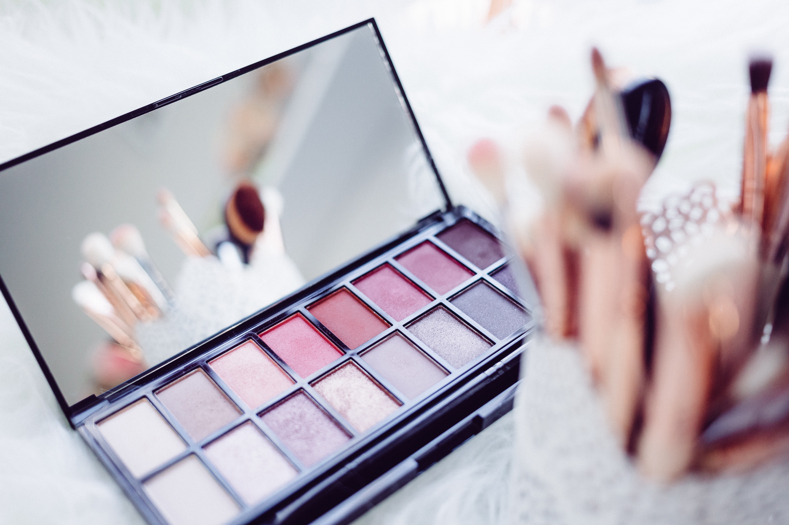

MakeUP.......

Learn how to apply your makeup with these important beauty tips. From applying liquid foundation to using a gel eyeliner, these tips and tricks will help you create a flawless look that you can be proud of.
STEP BY STEP GUIDE ON HOW TO DO MAKEUP LIKE A PRO :-

HOW TO PREP YOUR FACE FOR MAKEUP
Before we get into the best order to apply your makeup, it’s important to work your way through your skin care routine. You don’t need to spend a ton of time on your skin care routine, but there are a few simple steps you should take to ensure your skin is ready for makeup. Below, three skin care steps to take before makeup.
Step 1: Moisturiser and primer
It is of the utmost importance that your face is moisturised and well hydrated before you apply any makeup onto it. A hydrating cream, in this regard, works excellently since it even helps all the following products blend into your skin better. Then apply a primer, as it not only helps your face stay hydrated, it also enables your makeup to stay on for much longer.
Step 2: Apply foundation
The foundation is one of the most essential elements of your makeup since when correctly applied, it can help provide your face and neck regions with an even-toned, natural appearance. Use a foundation brush, preferably white-tipped, to apply the foundation to your face. Foundation, fundamentally, is of three types viz. liquid, powder, and cream. For those who do not wish to use too much of it, it is recommended that you only apply foundation to regions you wish to even out and leave the rest of your face foundation-free. It is also important that you blend it well with the neck regions so that your face makeup doesn’t come across as out of place with your neck. A quick tip, you can always use the primer to break down the opaque foundation makeup so as to make it appear clearer and blend better.
Step 3: Concealing with a concealer
Just about everyone thinks they’ve got certain flaws with their face, especially with regards to dark circles. And while accepting one’s flaws is a great thing to do, concealing them doesn’t really make you overtly vain either. The second step of how to do makeup, is learning to apply concealer to the problem areas, especially in the form of a triangle below your eyes. This triangular application helps conceal your dark circles while making your skin appear more naturally even toned and drawing attention towards your eyes.
Step 4: Blush, contour and highlight (BCH)
Highlighting and contouring are quick, easy processes that help in taking your makeup game to an altogether new level. Apply the highlighter, cream or liquid based, to your cheekbones, brow bones, on the Cupid’s bow and your chin before you swipe the contour on your cheeks, forehead and along the sides of your nose. Take care to ensure that the contouring doesn’t get too muddy and use an angled brush to blend it all in perfectly. Apply the blush onto the apples of your cheeks, extending upwards to the temple region. Between the blush, contour and the highlighter, different makeup experts recommend different orders of application. While learning how to do makeup, use the order that you’re most comfortable with and one that is most apt for the occasion. Some prefer to apply the blush before the highlighter, especially if the blush is shimmery enough by itself. If you’re using a powder blush, do not ever apply it over a liquid foundation since doing so will cause streaks, making it extremely difficult to blend in.
Step 5: The time for eye makeup
Some prefer to do the eye makeup before the blush, contour and highlight routine but it works just as well towards the end. Fill in your brows using an eye pencil before moving on to the eye shadow. Apply an eye shadow shade of your choice and then using a blending brush, preferably a nice fluffy one, dust a softer shade onto the crease and blend outwards. Give your eye makeup the requisite finish with eyeliner or mascara, using a very fine tipped pencil for the waterline and a stiff, angled brush for the lids. The eyes are one place where you can really show off your creativity. So go ahead and put your creative cap on and don't limit yourself while learning how to do makeup.
Step 6: Luscious lips at last!
The lips makeup, with the possible exception of the eyes, are perhaps the most noticed aspect of your makeup. For a quick fix, apply a red, rosy (or any colour of your choice) lipstick using a lip brush and you’re good to go. If you’ve got more time, covering the entirety of your lips with a lip liner and following up with a layer of liquid matte lipstick of the same colour works wonders for your lips. Finally, use a setting powder or spray to help keep your makeup in place for longer and you’re all set to paint the town red.
Top Makeup brands in India- 2020 Makeup tips
I’m going to take you through the most important makeup products for young women, whether you’re a makeup novice who is leaving for freshman year and isn’t sure what to bring, or you already have some experience under your belt and are looking to fill some gaps in your collection.
Choosing the best suited makeup brand
Remember the most important thing, choosing the best should be ‘Best for you’ and so whichever brand or brands of makeup you choose, it should be suitable to your
Skin type
Budget
Requirement
Climate
Longevity
& your skin imperfections if any.
So, the best advice I can give is, know your skin, do your research, try different brands, take expert advice if possible & you will find what works best for you. It doesn’t have to be the top 10 of everything, even a simple low-key brand can also do wonders to your skin. Remember, not always more money means better results.
Our recommendation for you:-

Top Products |
Check Price |
|---|---|
| Maybelline New York Fit Me Foundation | Click Here |
| Maybelline Fit Me Compact | Click Here |
| Lakme 9 To 5 Pure Rouge Blusher | Click Here |
| Lakme Eyeconic Eye Liner Pen Block Tip | *Click Here |
| Lakme Absolute Blur Perfect Makeup Primer | Click Here |
| Lakme 9 to 5 Complexion Care Face Cream | Click Here |
| Colorbar New Perfect Match Primer | Click Here |
| Deputy Hd pro Conceal | Click Here |
| Lakme 9To5 Primer + Matte Perfect Cover Foundation | Click Here |
| Maybelline New York Lash Sensational Waterproof Mascara | Click Here |
| SUGAR Cosmetics Contour De Force Mini Highlighter | Click Here |